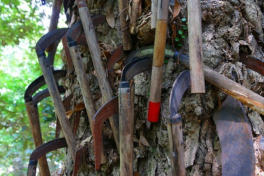

和歌山県の北部、かつらぎ町にある
丹生酒殿神社。
世界初の全身麻酔でお馴染みの
華岡青洲が奉納した石灯篭がある神社として有名だが（いや、そうでもないか）、当方のお目当ては本殿裏にあるこちら。
鎌八幡宮である。
鎌八幡宮といえば大阪、玉造にある
円珠庵鎌八幡が有名だが、ここ、和歌山にも鎌八幡があるのだ。
ちなみに大阪の鎌八幡は
縁切りにご利益があるとされている。
境内にある榎の大木の幹にぶっすりと鎌を刺すことで身に降りかかる諸々の悪縁を切るという神社なのである。
大木の幹に刺さる無数の鎌は見ているだけでもゾッとする光景なのだが、それに加えて縁切りを願う奉納者の念が強すぎちゃって胃が痛くなるようなスポットなのだ。
はてさて和歌山の鎌八幡はどうなんでしょ？
丹生酒殿神社の本殿の裏手に回ると鬱蒼とした林が広がっている。
その中を歩いて行くと…
木々の間にそれらしき巨木が見えてきた！
あ！これが鎌八幡かあ！

鎌八幡宮とは特定の社ではなく、この巨木の事なのだ。
幹に刺さった無数の鎌。
見ているだけで痛々しくて背中がゾワゾワしてくる。
大阪の鎌八幡と同じような按配だ。
生木、しかも
御神木であろう巨木に鎌を刺す行為というのはかなりアナーキーな行為に見える。
ところが…
この鎌八幡は
豊作や子宝を願って鎌を刺すのだという。
縁切りとは少し違う意味合いのようだ。
祈願者は願いを込めて御神木に鎌を刺す。ぶすり、と。
深く刺さると願いが成就するとか。
逆に鎌が木から抜け落ちると願いは叶わないと言われている。
なので刺す人はかなり真剣にぶすり、とやるのだろう。
見ればつい最近「奉納」された鎌も数多く見受けられる。
メーカーのシールが残っているものは新人。
シールが剥がれて、柄の色も白っぽくなってきたものが中堅、といえよう。
新しいものは刃の部分が錆びずに鋭い光沢を放っているのでえもいえぬ迫力がある。
木の成長に伴って刃がグイグイ幹に飲み込まれて行く鎌もある。
このような鎌を奉納した人はきっと願いが成就したのだろうな。
奉納して時間が経つと木製の柄の部分は腐食して無くなってしまう。
そして刃の部分だけが幹に食らいついているのである。
この辺はベテランというべきだろう。

ファーストインプレッションはおどろおどろしいだけだったが、こうしてみていると何だか一生懸命木に縋っているようで、いじましいようにも思えてくる。
この巨木はイチイガシといって樫の一種だそうな。
かつてはここから離れた場所にあったが、明治44年にこの地に移転したのだという。
これは全くの私見だが、
鎌奉納に関しては複数の意味があるように思える。
法隆寺五重塔の九輪にある四つの鎌を持ち出すまでもなく鎌は魔除け、悪縁切りの意味を持っているのは言うまでもない。
ところが、中にはそれだけでは説明のつかない事例もある。
例えば当サイト既報の岡山県
足王神社の鎌奉納を思い出していただきたい。

健脚祈願の神社に鎌っておかしくないすか？
一般的には健脚とか足病平癒の祈願には足型奉納や草履奉納が一般的でしょ。
「切る」という行為のメタファーである鎌を敢えて持ち出すには何か意味があるはずだ。
さらに思い出していただきたいのが岐阜の
南宮大社。

この神社にも数多く鎌が奉納されていた。
しかしここでの鎌奉納は「切る」という行為のメタファーではなく、
金属のカミサマへの奉納の一環として鎌奉納が行われている。
金属のカミサマの奉納…
さらにもう一軒の事例を挙げねばなるまい。
川崎の
金山神社である。
かなまらまつりで有名な（というかかなまらまつりしかフィーチャーされない）金山神社も金属のカミサマである。
そしてその
金属神が転じて子宝祈願、五穀豊穣のカミサマとされるのだ。
というわけで鎌八幡の話に戻りますよ。
ここの鎌八幡も元々金属神として祀られていたのではないだろうか。
なぜならこの神社、丹生酒殿神社の「丹」は硫化水銀のことであり、
丹生とは水銀の産出地であることを示す。
…というわけで私なりの結論。
この鎌八幡は金属神としての鎌奉納であって、大阪の縁切りに特化した鎌八幡とはそもそもの成り立ちが違うのでなかろうか。
…いや。これはあくまでも私見で、何の根拠もないので話半分に聞いてくださいね。
特にバイラルメディアの輩共、「大阪の鎌八幡と違うルーツを持つのだ！」などと、もっともらしく断言すんなよ…。
巨木の上部を見上げてみる。
するとかなり上の方にひとつだけ鎌が刺さっていた。
とても手が届く高さではないし、御神木だけによじ登った訳でもなかろう。
多分ブーメランのように回転させて刺したんだろうな。
そこまでして高いところに刺さなければならない願い事って一体何なんだろう？

色々な思いが交錯する神社であった。
追記；この記事を書いている最中、オカルトスポット探訪マガジン
「怪処」スタッフの小出氏が鎌八幡宮を訪問されていた。
氏によると「不適切な祈祷、詞は除去します」という張り紙がされていたそうな。
つまりここの鎌八幡宮は
縁切り祈願とは縁を切りたい、という宣言なのだろう。やっぱりな。